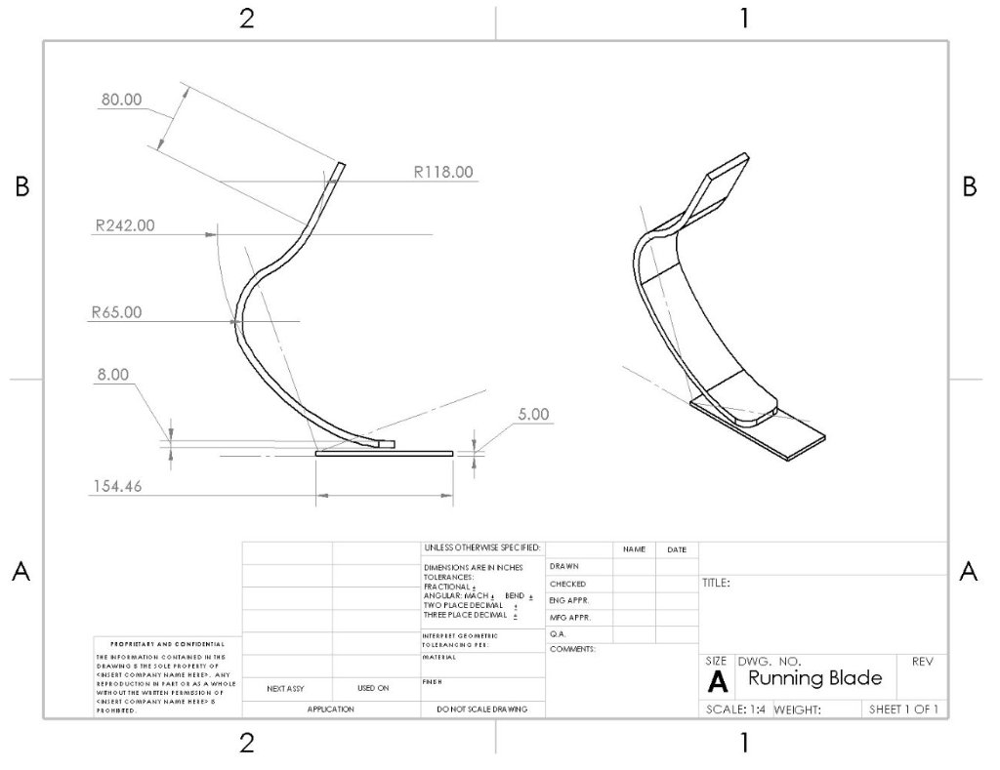
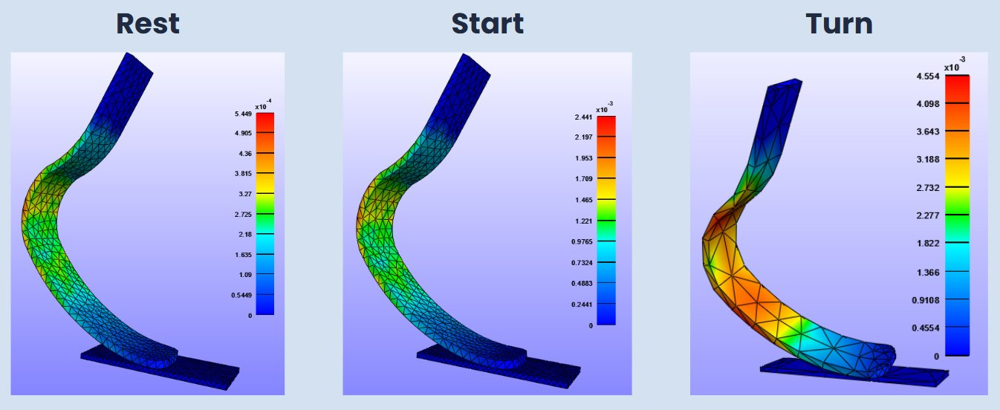

A biomechanical finite element analysis study of a carbon fiber prosthetic running blade, designed to simulate real stress and strain conditions across three phases of sprint running. Built in SolidWorks, meshed in FEBio Studio, and validated against published literature.
Problem
Running prosthetics must handle extreme and variable loads across different phases of a sprint. Standard designs aren't personalized, and physical testing alone can't reveal internal stress distribution. The goal was to use FEA to simulate how the blade behaves under realistic loads at each phase, and use those results to inform future personalized blade geometry.
SolidWorks design

SolidWorks drawing images/project-blade-cad.jpgFEA model
Exported the SolidWorks model as STL, then converted to STEP format to enable custom mesh generation in FEBio Studio. The STEP format gave full control over mesh density and element type, which was critical for accurate stress capture at the blade curves. Carbon fiber was modeled as an anisotropic composite with multi-directional fiber orientation (0°, 45°, 90°) to reflect real-world layup construction.
Phase-by-phase analysis
Simulated principal Lagrange strain and principal stress across three loading phases rest, start, and turn each with different boundary conditions and force vectors matching real ground reaction forces during sprinting.

Principal Lagrange strain results images/project-blade-results.jpgMaterial comparison
Tested two carbon fiber configurations to assess how fiber direction affects stress distribution across the blade geometry.
Validation
Results were compared against published FEA studies on prosthetic running blades using ANSYS (von Mises stress and equivalent elastic strain). Stress concentration locations and magnitude ranges were consistent with literature, confirming model validity. Negative Jacobian errors encountered during contact setup were resolved through contact point optimization, improving convergence and mesh quality.
Troubleshooting
Future directions
Planned improvements include cyclic loading simulation to model fatigue over repeated running strides, refining mesh density for higher accuracy at stress concentrations, and testing alternate blade geometries varying angle, socket placement, and width to identify optimized designs for different runner profiles.